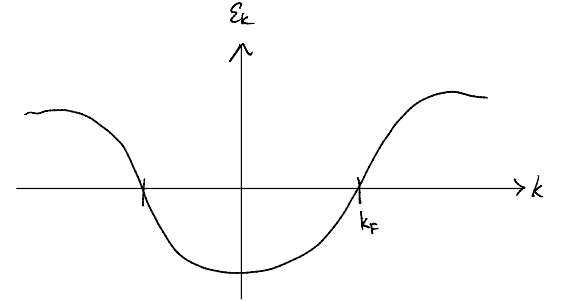
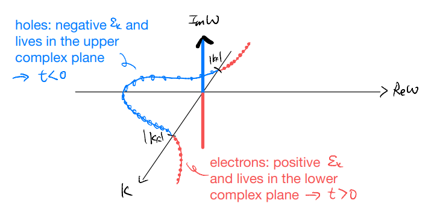

lec15
Contents
lec15¶
Note
This is NOT the official course PHYS5340 website yet!
If you are student in this course, always take the lecture notes as the correct one if you find any differences between lecture notes and website contents
If you are just passerby, use the materials below at your own risk. Since the website is still the first version (even alpha version), there could be some typos, incorrect/inaccurate/improper statements.
Note
All materials in this website are based on the course offered at HKUST
Note
As a “casual course”, we provide only general references but not specific ones to the materials introduced
Note
All materials’ copyright in this website are reserved for the course lecturer
If you want to use the material somewhere, you might need to contact the lecturer first
Note
Contribution is always welcome. if you find any typo, incorrect/inaccurate/improper statements or necessary references, do not hesitate to
raise an issue on github repo
make an pull request on github repo
contact me directly
20220325
Topics
What’s so hard about interaction?
Bare electron propagator
Full electron propagator
Goals
Appreciating the steps it takes to develop perturbation theory
Familiarizing with the one-particle Green’s function
Interacting, so what?¶
Let’s first recall where we were last time. We considered an interacting problem of electrons, given schematically by
and we asked what is, for instance, the dielectric function of the system. They key point to note is that
where \(\rho_{\text{sc}}\) encodes how the system responds to the external potential, and in linear response is given by
is the retarded density-density response function of the interacting problem. (Note: we have deliberately kept the discussion schematic above, and ignored all the spatial / momentum dependence etc.)
In principle, we can go ahead and compute the expectation value. Before attempting that, however, let us make a clarification remark about the interaction pictures involved:
Linear response: Full, interacting Hamiltonian as the unperturbed problem and the external “probe” as the perturbation. The susceptibility are understood to be in the Heisenberg picture with respect to the full interacting Hamiltonian
Adiabatic turning on: “Bare”, solvable (non-interacting / free / Gaussian) Hamiltonian as the unperturbed problem and “adiabatic turning on of interactions” as the perturbation.
These two are really quite different. In particular, we bear in mind that the susceptibility (is equal to retarded density-density response function) is a Heisenberg picture quantity with respect to the full Hamiltonian
We also call this a retarded two-particle Green’s function. “Two-particle” because each density operator \(\hat{\rho}\sim \hat{c}^{\dagger}\hat{c}\).
Here, the ground state \(|\Omega_H\rangle\) is that of the interacting problem \(\hat{H}=\hat{H}_0+\hat{V}\).
Furthermore, we do not immediately know how to evaluate this expression! Recall, to take advantage of the magic of the S-matrix, time-ordering, and adiabatic turning on, we focused on the time-ordered Green’s function, so the closest analog we have is
which can now be rewritten, though the adiabatic turning on, into a formal expression
The numerator can be expanded in a Dyson’s series
where the expectation value to take is, schematically,
where, for sanity’s sake, we have dropped all labels and instead used the subscript to denote the time. Bear in mind that, here, \(t\) and \(0\) are “external” and \(t_1,t_2,\cdots,t_n\) are all integrated over.
We know how to evaluate such an expression. It’s “just” Wick’s theorem and contractions! We know that the answer will be some combinatorial product of our basic building block
known as the (bare) Feynman propagator.
A brute force evaluation for the lowest orders, say up to \(V^2\), may seem perhaps tedious but possibly doable. But, it is wrong to think that such a calculation will suffice for finding the lowest order interaction corrections: we have to remember there is also a denominator, which is essentially the same power series but without the “density-density” part! Fortunately, as we have seen from the statistics mechanics correspondence, there is a way to handle both the numerator and the denominator in one-shot: by taking log!
In the following, we address these challenges, one at a time. Before we lose sight of the picture and get buried in the technical details, it may be good to first summarize how we will attack the problem
Evaluate the “bare” (Feynman) propagator
Attempt to evaluate the Dyson’s series by “brute force”, through Wick’s theorem to Feynman diagrams as a mnemonic
Take care of the denominator: linked cluster theorem
Dyson’s equation and dressed propagators: resummation of series and 1PI
Partial resummation and approximations
Analytic continuation and going back to real time
Bare (Feynman) propagator¶
The starting point of our perturbation theory is, of course, the unperturbed problem. Here, we consider the “free” part of the problem, with the Hamiltonian
As discussed briefly (c.f. lecture on localized electrons), we can define “eigenmodes” such that
is readily diagonalized, with all the eigenstates built by specifying the values \(\hat{\tilde{n}}_i=0,1\) for the full set of mutually commuting number operators.
The ground state, i.e., the lowest energy state, is constructed by setting
and occupation of modes with exactly \(\varepsilon _i=0\) does not affect the energy of the state. Such zero modes, if exist, lead to ground-state degeneracy.
Furthermore, these are eigenmodes, in the sense that their equations of motion are simply
Let us now assume the system has translation invariance, such that we can further Fourier transform
The momentum-space singular particle Hamiltonian is customary called the Bloch Hamiltonian. Its eigenvalues \(\text{eig}(h(k))\) form energy bands which, for local Hamiltonian, are continuous in the (quasi-)momentum \(k\). The number of bands equals to the dimension of the Bloch Hamiltonian, which in turns is given by the number of fermion modes we retain in each unit cell. For simplicity, let us take that we only have one orbital per cell, such that \(h(k)\) is \(2\times 2\) because of the spin-\(\frac{1}{2}\) nature of electrons.
For spin-rotation invariant systems, \(h\left( k \right) =\varepsilon _k\sigma ^0\) and we have a single band (which is doubly degenerate). Our earlier discussion applies equally well, but now the energy is labeled by the momentum \(k\) (instead of a generic index).

For a simple dispersion, say a “consine band”, there is a single Fermi surface defined by \(\varepsilon_k=0\). The ground state is then the filled Fermi sea
With this setup we can now evaluate the “bare propagator”. Remember, the building block of our perturbation theory is the “basic T-contraction”.
where we have used the fact that our ground state is translation invariant in both space and time (in particular, we used \(\left< \hat{c}_k\hat{c}_{k'}^{\dagger} \right> \propto \delta _{kk'}\) to focus on a single momentum). Evaluating
where the first term is the electron-excitation above the Fermi sea and the second term is the hole-excitation within the Fermi sea. Going to frequency space, we have
Noticing that the Heaviside step function is simply an “on-off switch”, it will be natural to further define
and we might write
we call this the (Feynman) propagator.

Notice that, in our single band problem, we have a single pole at each momentum \(k\). (Contrast with the phonon propagator, which have two poles for each momentum \(k\).) In particular, we see that a single Green’s function capture both the electron and hole excitations. The union of the two comes about in an interesting way, with the nature of the excitation (electron versus hole) encoded in the location of the pole (lower versus upper complex plane). In fact, going back to the real-time expression, we see that:
Electron piece \(\Theta \left( t \right) \left< \hat{c}_k\left( 0 \right) \hat{c}_{k}^{\dagger}\left( t \right) \right> \): \(t>0\), forward in time
Hole piece \(\Theta \left( -t \right) \left< \hat{c}_{k}^{\dagger}\left( 0 \right) \hat{c}_k\left( t \right) \right> \): \(t<0\), backward in time
Remarks: The problem of QED electron is completely analogous. The only changes are
the Fermi “wave vector” happens to be \(k_F=0\)
the “filled Fermi sea” is the whole set of negative energy solutions to Dirac equation
we call the “holes” positrons
What we mentioned above is a paraphrasing of Feynman’s famous interpretation that positron (electron traveling backward in time). (There is a second part of the interpretation: there is only one electron in the universe and it keeps traveling forward and backward. This “one-electron universe” is attributed to Wheeler, Feynman’s PhD advisor.)
Let us clarify two points before moving on:
What happened to the spin index? In principle, the one-particle propagator (two-point Green’s function) should be a matrix, since each of the two fermions carries an index. (E.g., we simplify the momentum part using \(\left< \hat{c}_k\hat{c}_{k'}^{\dagger} \right> \sim \delta _{kk'}\)) Correspondingly, when we restore spin indices, we simply have
\[ G_{\sigma \sigma '}^{F}(k,t)=-i\left< \mathcal{T} \left[ \hat{c}_{k\sigma}\left( t \right) \hat{c}_{k\sigma '}^{\dagger}\left( t \right) \right] \right> \]for spin-rotation-invariant system, we also have \(\left< \hat{c}_{\sigma}\hat{c}_{\sigma '}^{\dagger} \right> \sim \delta _{\sigma \sigma '}\)
\[ G_{\sigma \sigma '}^{F}\left( k,t \right) =G^F\left( k,t \right) \delta _{\sigma \sigma '}\]and so we could focus on the “single band” discussion as if the spin did not exist. The spin, however, will actually still be important in giving “overall factors” for the different terms in the perturbation expansion.
Some of you might notice that the way we defined the propagator is actually ad hoc in a sense. Let us consider, instead, the contraction
\[\begin{split} \begin{align*} &\left( -i \right) \left< \mathcal{T} \left[ \hat{c}_{k}^{\dagger}\left( t \right) \hat{c}_k\left( 0 \right) \right] \right> \\ =&\left( -i \right) \left[ \Theta \left( t \right) \left< \hat{c}_{k}^{\dagger}\left( t \right) \hat{c}_k\left( 0 \right) \right> -\Theta \left( -t \right) \left< \hat{c}_k\left( 0 \right) \hat{c}_{k}^{\dagger}\left( t \right) \right> \right] \\ =&-ie^{i\varepsilon _kt}\left[ \Theta \left( t \right) \Theta \left( \left| k_F \right|-\left| k \right| \right) -\Theta \left( -t \right) \Theta \left( \left| k \right|-\left| k_F \right| \right) \right] \\ =&-G_{0}^{F}\left( k,-t \right) \end{align*} \end{split}\]and, as such, we see that this alternative contraction does not provide us with additional data. (But, as a corollary, it also suggest that the “arrow of time” we assigned to electrons versus holes is not entirely unambiguous.) Similarly, we may go to frequency space and get
\[ \left( -i \right) \int_{-\infty}^{\infty}{dt\left< \mathcal{T} \left[ \hat{c}_{k}^{\dagger}\left( t \right) \hat{c}_k\left( 0 \right) \right] \right> e^{i\omega t}}=-\int_{-\infty}^{\infty}{dtG_{0}^{F}\left( k,-t \right) e^{i\omega t}}=-G_{0}^{F}\left( k,-\omega \right) \]